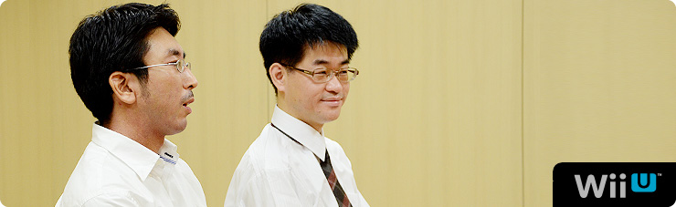
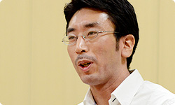
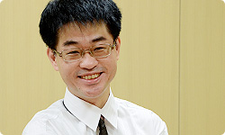
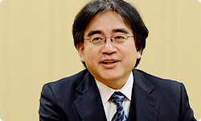

<div class="l-category-local-header">
<div class="category-local-header">
<div class="category-local-heading"><span>社長が訊く</span>
<div class="category-local-sub">IWATA ASKS


<div class="l-soft-topic-path is-block">
<div class="l-soft-topic-path-inner">
<div class="soft-topic-path">
<ul class="topic-path"><li class="topic-path-item"><span>『Wii U』 Wii U Chat篇</span></li></ul>


<div id="page-container">
<header class="interviewheader">
<h2 class="interviewheader__ttl"><span class="subtext">社長が訊く</span>『Wii U』</h2>

</header>
<div class="tabmenu-container">
<p class="tabmenu__ttl">シリーズ一覧
<ul class="tabmenu__body tabnum12">
<li class="tabmenu__item tab1">本体 篇</li>
<li class="tabmenu__item tab2">Wii U GamePad 篇</li>
<li class="tabmenu__item tab3">Miiverse プロデュース 篇</li>
<li class="tabmenu__item tab4">Miiverse 開発スタッフ 篇</li>
<li class="tabmenu__item tab5">インターネットブラウザー 篇</li>
<li class="tabmenu__item tab6">Wii U Chat 篇</li>
<li class="tabmenu__item tab7">New スーパーマリオブラザーズ U 篇</li>
<li class="tabmenu__item tab8">ZombiU（ゾンビU） 篇</li>
<li class="tabmenu__item tab9">Nintendo×JOYSOUND Wii カラオケ U 篇</li>
<li class="tabmenu__item tab10">Nintendo Land 篇</li>
<li class="tabmenu__item tab11">Nintendo TVii 篇</li>
<li class="tabmenu__item tab12">Wii Street U powered by Google 篇</li>
</ul>

<div class="hero-container">
<div class="hero__img">

<div class="interviewsubheader">
<div class="interviewsubheader__ttl"><h2>Wii U Chat篇</h2>

<div class="pageindex-container">
<p class="pageindex__ttl">目次
<ul class="pageindex__body">
<li class="pageindex__item">1. １５年越しの想い</li>
<li class="pageindex__item">2. 「家族の幸せって、何だ？」</li>
<li class="pageindex__item active">3. 気持ちを通じ合えるツールに</li>
</ul>

<div class="interview-container">
<h3 class="interview__ttl">3. 気持ちを通じ合えるツールに</h3>

岩田
: 当初、竹田さんが話されていた、<br>「何か遊びの要素がほしい」という想いに対して、<br>『Wii U Chat』には、<br>Wii U GamePadのタッチスクリーンに<br>絵や文字を手描きできる機能が入りましたよね？


民谷
: はい。通話のとき、話をはずませる意味で<br>何かひとつ一緒にできるものがほしかったんです。<br>Wii U GamePadに手描きできるということで、<br>自然な流れとしてそのアイデアが出てきました。


岩田
: あれを見てると、わたしはつい、<br>ちょっと前に放映されていた家庭教師のＣＭを<br>思い出してしまいます（笑）。<br>先生が熱くしゃべっているところに、<br>生徒がどんどんラクガキしていくという、<br>ああいうことが楽しめるわけですね。


民谷
: 実際にやってみると、想像していた以上に<br>手応えがありました。<br>相手の顔にラクガキすることは、<br>リアルではなかなかできませんけど、<br>「ちょっとやってみたかった」という感覚が<br>あるのかもしれません。<br>その場が和んで、会話がはずむことにつながりました。<br>普通なら「上司の顔にラクガキする」のは<br>絶対にありえないですけど、<br>開発中は、なぜか許されていましたし、<br>むしろ、ラクガキされるほうは<br>うれしい気持ちになっていたみたいです。


岩田
: おじいちゃんやおばあちゃんと<br>お孫さんが使っていることを想像すると、<br>なにか、わくわくしますね。<br>この機能は、最初から<br>この方向でスッとまとまったんですか？


民谷
: じつは、最初、<br>シンプルなホワイトボード機能をつくろうとしたんです。<br>モード切り替えボタンを押すと<br>テレビ画面上にホワイトボードを表示するようにして、<br>お互いが自由に絵を描けるようにしました。<br>ただ、実際にやってみると、<br>真っ白なボードが目の前にあることで、<br>絵が得意ではないお客さんにとってしんどいですし、<br>相手にその様子を見られている状況ではなおさらでした。<br>それに、色数やペンの種類が多いほど<br>さまざまな表現ができるようになるんですが、<br>逆にその作業に集中してしまって、<br>かえって会話がはずまなくなってしまうんです。<br>そして、相手とのやりとりが減ってしまって、<br>疎外感を抱いたり、相手の表情を見られなくなったりして、<br>「一緒にいる感じ」が薄れてしまったんです。


岩田
: ああ、それじゃ、「家族の幸せ」から<br>逆に離れてしまいますよね。


民谷
: そうなんです。<br>逆に、下地にあらかじめ画像が準備されていることで、<br>ホワイトボードを目の前につきつけられていたときに感じた<br>「何か描かなければ・・・」という怖さがなくなりました。<br>「動いている画の上に描くのは難しそう」という<br>意見もあったんですけど、やってみると<br>描いたものに合わせて人が動く、<br>そういった新しい発見もありました。




岩田
: この感じだと、声に出して話すと<br>少し恥ずかしくて言えないような「本音」の気持ちを<br>うまく伝えられそうな感じがしますね。


民谷
: はい、「ありがとう」のひとことでも、<br>「声」と「表情」で伝えるのと<br>「手描き」と「表情」で伝えるのとでは、<br>受け手側が違った感覚を得られるというのを実感しています。<br>開発中に、ＮＬＧさんと真剣な話をしていて<br>険悪な雰囲気になったときに、<br>会話に割って入ることはできなくても、<br>そこで手描きでちょっといたずら書きをすることで、<br>気持ちが和らいで許せるような気持ちになれたということも<br>実際にありました。


岩田
: あと、描く様子が「リアルタイムで見ることができる」<br>というところも楽しさにつながっているんじゃないでしょうか。<br>このことと関連する話で言えば、じつは、この機能には<br>『いつの間に交換日記』（※17）のスタッフが<br>かかわっているんですよね。


民谷
: はい。ディレクターの今井（大二）さん（※18）や<br>デザインを担当した北井（優）さん（※19）がかかわっているので、<br>さわり心地が近いものになっていると思います。

※17『いつの間に交換日記』＝２０１１年１２月に任天堂より配信開始されたニンテンドー3DS専用コミュニケーションツール。２０１２年５月からはニンテンドー3DS本体付属のＳＤカード内にプリインストールされている。
※18今井大二＝ネットワーク事業部所属。『いつの間に交換日記』のディレクターを担当。くわしくは、<span>社長が訊く『いつの間に交換日記』</span>を参照。
※19北井優＝ネットワーク事業部所属。『いつの間に交換日記』ではびんせんのデザインを担当。くわしくは、<span>社長が訊く『いつの間に交換日記』</span>を参照。


岩田
: あの手描きの線はちょっと光って、<br>ぼんやりにじんでいるような感じなんですけど<br>どうしてああいう表現になったんですか？


民谷
: あの線は、北井さんの発案ですね。<br>最初は普通にベタッとしていたんですけど、<br>わたしから「どんな背景でもちゃんと見られるように」<br>というお願いをしたところ、<br>出てきたのがあれで、不思議と映えるんですね。


岩田
: ああ、そうなんですね。<br>「このペン、自然画の上に映えるなぁ」って、<br>そのとき妙に思ったんです。<br>やっぱり、プリクラと共に育った世代は<br>発想が違いますよね。


民谷
: 写真などでどんな色を合わせたら<br>どう映えるのか、<br>北井さんはわかってらっしゃいますね。


岩田
: やっぱり男だけでつくると、<br>そういうところまで<br>気が行き届かないんでしょうね（笑）。


一同
: （笑）


民谷
: 不思議だったのは、<br>それまでベタッとしたペンのときには<br>みんな絵を描いていたんですけど、<br>あのグロー（光る表現）にしてからは、<br>絵よりもむしろメッセージを描くようになったんです。


岩田
: あれって、あれで単純に絵を描くというより、<br>その背景にある画とつながるものを<br>「描きたい」っていう感じがするんですよね。


民谷
: そうですね。<br>そこは『Wii U Chat』ならではの<br>画と融合した、気持ちを通じあえるツールに<br>なっていると思います。


岩田
: 手描き以外にそういったツールは<br>ほかに何かあるんですか？


民谷
: じつは、社内外から山ほどアイデアを<br>出しあったんですが、<br>最終的には入れませんでした。<br>いろいろ実際に試したこともありましたが、<br>シンプルさとわかりやすさには<br>かえってマイナスになってしまうんです。


岩田
: 「いったい何を目的にしたソフトなんだ」って感じですか？


民谷
: はい（笑）。<br>そこでまたコンセプトに立ち戻って、<br>入り口を簡単にすることと、<br>相手の顔を見て話す、ということにしぼって、<br>最後に残ったのがいまの形になっています。


岩田
: 機能はシンプルだけど、<br>すごくたくさんのことを試して、<br>「選び抜いた結果がこれです」ということなんですね。


民谷
: インパクトがあって、<br>最初、「これはいい！」って<br>思える機能もたくさんあったんですけど、<br>日常生活に溶け込んで、お客さんに<br>ずっと使い続けていただくことを考えたときに、<br>「本当に必要なのかどうか」を考えたんです。


岩田
: 一度は使うけど、二度は使わない機能って、<br>たしかに世の中にいっぱいありますからね。<br>そのことでわかりにくくなってしまって<br>敬遠する人が出てくる可能性があるなら、<br>「余計なものはないほうがいい」という<br>割り切りなんですね。


民谷
: そうですね。<br>やはり、できるだけ多くのみなさんに<br>使っていただきたいので。


岩田
: 渡辺さんはどうですか。<br>竹田さんの想いが実現した感じはありますか？


渡辺
: はい。わりとよい形で、実現できたと思っています。<br>竹田さんが最初に「テレビ電話をテーマにしよう」と<br>おっしゃっていたNINTENDO64の頃は、<br>まだハード的にも通信環境的にも<br>ハードルが高かったと思うんです。<br>それがいまはおじいちゃんの家にも<br>当たり前にネットワークがつながっていて、<br>Wii Uが１台あれば、その日からすぐに使える。<br>そこがやっぱり「よかったのかな」と思っています。




岩田
: そこで大事なのは、<br>竹田さんの最初の想いにもありましたけど、<br>「ニンテンドーｅショップからダウンロードできます」ではなくて、<br>最初から標準搭載されるということに<br>こだわったことでもありますよね。


渡辺
: そうですね。<br>“竹田さんの想いを聞く会”でも、<br>この機能はお互いに入れている必要があるので、<br>「最初から入っていなければいけない」という<br>話がありました。


岩田
: 買ったその日から、ネットにつなぐと、<br>『Wii U Chat』のソフトが、<br>ネットワークから自動的に<br>ダウンロードされる形になっているんですよね。


渡辺
: そうですね。


岩田
: テレビ電話があまり普及しなかった理由に、<br>「部屋を片付けないとつなげない」<br>ということもあったと思うんですが、<br>今回、カメラは手元についていて<br>自由な方向に向けられますから、<br>都合の悪いところは映さないようにできますし、<br>そのうえで、「相手を大画面テレビに映し出すこともできる」<br>というバランスがおもしろいと思っているんです。




民谷
: そうですね、手元にカメラがあるので、<br>持っている人の表情が大きく映りますし、<br>それを見ている家族の人がときどき画面にあらわれるという、<br>おもしろさもあると思います。


岩田
: 「Wii U GamePadプレイスタンド」や<br>「Wii U GamePad充電スタンド」にセットすると、<br>Wii U GamePadを持たずに使うこともできますから、<br>ぜひ１対１だけじゃなく、<br>「みなさんで使ってもらえたらいいなぁ」と<br>とても強く思います。


民谷
: はい、そうですね。<br>家族と家族だけじゃなくて、<br>たとえばなかなか外に出られない<br>育児中のお母さん同士などのお役に立てたり、<br>リビング同士をつなげることで、<br>いろんな使いかたができるんじゃないかと思っています。


岩田
: 本当にいろんな利用シーンがありそうですね。<br>頑張って標準搭載した意味が、<br>これからきっと活きてくると思います。<br>今日はありがとうございました。


渡辺・民谷
: ありがとうございました。


<li class="pagination-prev"><span>2. 「家族の幸せって、何だ？」</span></li>
<li class="pagination-next"><span>→ New スーパーマリオブラザーズ U 篇</span></li>
</ul>
<div class="listbtn-container">
<p class="listbtn__item">社長が訊く 一覧

